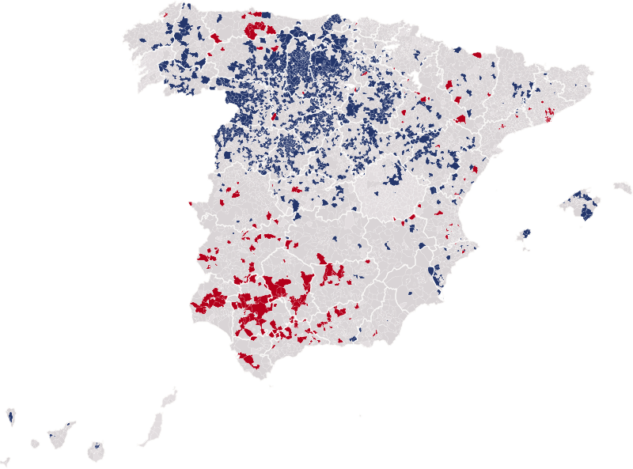

Actualidad · Noventa años en el mismo lado · España
256 pueblos han votado a la izquierda en 1936 y en las 16 generales de la democracia; 1.610, siempre a la derecha
L'Hospitalet, Gijón, Sabadell y Dos Hermanas votaron al Frente Popular en febrero de 1936 y han votado a la izquierda en todas las elecciones generales desde 1977. Burgos, Ávila, Zamora y Pozuelo de Alarcón, a la derecha. Entre medias hubo una guerra, cuarenta años sin urnas y, en muchos de ellos, una población que ya no es la de entonces.
Por Nacho G. del Álamo ·

Cada párrafo lleva una etiqueta: dato (cifra comprobable con las fuentes), patrón (relación que se repite, sin afirmar la causa), hipótesis (explicación posible, sin dos fuentes independientes) o contexto (hechos y declaraciones publicados por otros, enlazados). Cómo verificamos
ContextoLlueve en Madrid el 16 de febrero de 1936. En una acera de La Guindalera, un barrio del este de la ciudad, bajo árboles sin hojas, la gente espera para votar con el paraguas abierto. Una mujer lleva un mantón con flecos; otra, una falda de lunares. Por delante de la cola pasa un guardia civil con el tricornio. Son las últimas elecciones generales libres que va a haber en España en cuarenta y un años. La siguiente fue el 15 de junio de 1977. Los que estaban en esa cola y llegaron vivos a 1977 tenían entonces al menos 64 años.
ContextoEl Atlas Electoral de la Segunda República de la Universitat Pompeu Fabra, ya en nuestro mapa, permite poner aquel febrero al lado de las 16 generales celebradas desde 1977. Hemos buscado los municipios que nunca han cambiado de bando: los que votaron al Frente Popular en 1936 y a la izquierda en todas las generales de la democracia, y los que votaron a las derechas en 1936 y a la derecha en todas las demás.
Diecisiete elecciones, el mismo lado
DatoDe los 7.365 municipios con datos de las diecisiete elecciones, 256 han votado siempre a la izquierda y 1.610 siempre a la derecha. Para 1977-2023 contamos como izquierda al PSOE, al PCE y sus herederos (IU, Podemos, Sumar), a ERC, a EH Bildu y al BNG; como derecha y centroderecha, a UCD, AP y PP, CDS, Ciudadanos, UPyD, Vox, CiU y Junts, PNV y Coalición Canaria. Dejamos fuera los 127 municipios donde en 1936 ganó el PNV o el centro.

DatoLa fidelidad a la derecha es más frecuente: de los 4.837 municipios donde ganaron las derechas en 1936, 33 de cada 100 no han dejado de votar a la derecha. De los 2.401 donde ganó el Frente Popular, solo 11 de cada 100 han votado siempre a la izquierda.
La aldea y la fábrica
PatrónLos dos tipos de fieles no se parecen. Los de la derecha son pueblos muy pequeños: la mitad tiene menos de 174 habitantes. Están sobre todo en Castilla y León: en Palencia, 75 de cada 100 municipios con datos han votado a la derecha en las diecisiete elecciones; en Segovia, 55; en Burgos y Ávila, 51. Los de la izquierda son más grandes, con una mediana de 3.029 habitantes, y están en la Andalucía de los jornaleros, en Badajoz, en Asturias y en el cinturón industrial de Barcelona.
DatoL'Hospitalet de Llobregat dio el 77,1% al Frente Popular en 1936 y el 69,3% a la izquierda en 2023. Sabadell, el 64,1% y el 65,0%. Gijón, que resistió a los sublevados hasta octubre de 1937, el 63,8% y el 50,6%. Dos Hermanas, el 47,7% y el 51,3%. Al otro lado, la ciudad de Burgos dio a las derechas el 52,9% en 1936 y el 53,5% a la derecha en 2023; la ciudad de Ávila, el 50,4% y el 54,5%; la ciudad de Zamora, el 49,6% y el 54,3%. Pozuelo de Alarcón, un pueblo de 2.097 electores en 1936, tiene hoy 87.407 habitantes y dio el 76,4% a la derecha en 2023.
DatoQue un municipio no cambie no quiere decir que sus vecinos sean los mismos. L'Hospitalet tenía 20.970 electores en 1936 y 175.260 en 2023. En los pueblos fieles a la derecha pasó lo contrario: 85 de cada 100 tienen hoy menos electores que en 1936, aunque entonces solo votaban los mayores de 23 años, y la mitad conserva menos del 40% de los que tenía. Entre los fieles a la izquierda, han perdido electores 40 de cada 100.
HipótesisBuena parte del crecimiento del cinturón de Barcelona llegó con la inmigración de otras regiones en los años cincuenta y sesenta, y el voto a la izquierda se mantuvo aunque cambiara la gente. En la Castilla que se vació, el voto de los que se quedaron se parece al de 1936. Son dos caminos distintos hacia el mismo resultado, y estos datos no permiten decir cuál pesa más.
Lo que viene de antes
ContextoEl politólogo Pau Vall-Prat (Universitat de Barcelona), uno de los autores del Atlas, ve continuidades: «Donde se votaba más a la Lliga después se ha votado más habitualmente partidos conservadores», dijo al Ara. Y su colega Toni Rodon (Universitat Pompeu Fabra) recordó por qué estos datos tardaron tanto en reunirse: «Es un periodo que, en muchos lugares, no quieren remover».
ContextoLas piezas no son las mismas. La izquierda de 1936 era una coalición de republicanos, socialistas y comunistas que se presentó unida una sola vez; la de 2023 es la suma de partidos que compiten entre sí. Las derechas de 1936 eran la CEDA y sus aliados monárquicos y agrarios; la derecha de hoy incluye partidos nacidos en la democracia. Y comparamos lugares, no personas: quien votó en febrero de 1936 tendría hoy al menos 113 años.
Lo que estos datos no dicen
ContextoQue un municipio vote siempre al mismo bloque no explica por qué. Puede ser la memoria de las familias, el tipo de trabajo, la propiedad de la tierra, la religión o la llegada de vecinos que votan parecido; con estos datos no se puede separar una cosa de otra. En 1936 se votaba con listas abiertas y varios votos por elector, y aquí el peso de cada bloque es su parte de los votos a candidatos. Faltan casi todos los municipios de Cuenca y Pontevedra en 1936, y los municipios desaparecidos se suman al actual en que se integraron. La lista de los 256 fieles a la izquierda está al final.
ContextoEn la foto de La Guindalera, el guardia civil pasa de largo y la cola sigue bajo la lluvia. Madrid no es uno de los fieles: votó al Frente Popular aquel día y ha votado a la derecha muchas veces desde 1977. Pero en 1.866 pueblos de España, la papeleta que se metió en la urna aquel domingo de febrero se sigue pareciendo a la de ahora.
Ver los 256 municipios fieles a la izquierda
Mira 1933 y 1936 en tu municipio, en el mapa · Más: Los municipios que han votado al mismo partido desde 1977 · El mapa de 1936 apenas se parece al de hoy
Método y fuentes
- Qué se compara
- Los 7.365 municipios actuales con datos de las generales de febrero de 1936 y de las 16 generales de 1977 a 2023. En 1936, el Frente Popular frente a las derechas. Desde 1977, la izquierda (PSOE, PCE, IU, Podemos y Sumar, ERC, EH Bildu y BNG) frente a la derecha y el centroderecha (UCD, AP y PP, CDS, Ciudadanos, UPyD, Vox, CiU y Junts, PNV y CC).
- Límites
- Los bloques no son los mismos partidos en 1936 y después: comparamos coaliciones de entonces con sumas de partidos de ahora. Contar a UCD, CDS, Ciudadanos, CiU, Junts, PNV y CC con la derecha es una decisión. Se excluyen los 127 municipios donde en 1936 ganó el PNV o el centro, y los empates. Faltan casi todos los municipios de Cuenca y Pontevedra en 1936. Los municipios desaparecidos se suman al actual en que se integraron. El censo de 1936 era de mayores de 23 años.
- Cómo se calcula
- Bloque ganador en cada elección: el que suma más porcentaje de voto en el municipio. Fiel: el mismo bloque en las 17 elecciones. Electores: censo de 1936 y de 2023. Cifras reproducibles con los scripts del expediente de la pieza. Metodología de Actualidad · Metodología del Atlas
- Fuentes
- Toni Rodon, Pau Vall-Prat y Diego Martín Álvarez, Electoral Atlas of the Spanish Second Republic (1931-1936), Universitat Pompeu Fabra, CORA Repositori de Dades de Recerca (CC BY-NC-SA 4.0)
- Ministerio del Interior, resultados electorales por mesa (Infoelectoral), vía pollspaindata. Sin voto exterior (CERA)
- Aleix Moldes, «¿Qué votaron en tu pueblo en 1936? El mapa electoral de la Segunda República», Ara (8-5-2026)
- Autoría
- Nacho G. del Álamo
- Revisión de datos y texto
- Nacho G. del Álamo, 23 de octubre de 2026
- Publicado · actualizado
- 23 de octubre de 2026 · 23 de octubre de 2026
- Correcciones
- Ninguna.
Serie «Historia electoral»: 29 piezas
- Pozuelo, Getxo o Ávila: 1.932 municipios donde el PSOE nunca ha ganado unas generales
- Siete partidos distintos han ganado en Mont-roig del Camp: ha cambiado 11 veces de ganador en 16 generales
- En Baltar votó el 16 % en 1979; hoy vota el 79 %. La participación imposible del interior gallego
- En Arona votó uno de cada cinco electores en las europeas de 2014
- Tres partidos en 1,3 puntos: el empate a tres de Euskadi en 2023 no tiene precedentes
- El voto en blanco se multiplicó por seis entre 1977 y 2000, y desde entonces se ha reducido a la mitad
- Antes de Teruel Existe: los cinco diputados andalucistas de 1979 y el 19,7 % de Cádiz
- De 23,6 a 35,1 millones: el censo electoral ha crecido un 49 % desde 1977
- Las europeas solo superan el 60 % de participación cuando coinciden con las municipales
- El mapa de 1936 apenas se parece al de hoy: 1.545 pueblos que votaron a las derechas eligen ahora a la izquierda
- Fuente Vaqueros, el pueblo de Lorca, dio el 77,5 % al Frente Popular; Víznar, donde lo mataron, el 63 % a las derechas
- Gernika votó al PNV en 1936 y volvió a hacerlo en 2023, por 11 votos; Belchite tiene hoy menos electores que antes de su batalla
- Las mujeres votaron por primera vez en 1933 y ganaron las derechas; en 1936 volvieron a votar y 888 pueblos se pasaron al Frente Popular
- Estás aquí256 pueblos han votado a la izquierda en 1936 y en las 16 generales de la democracia; 1.610, siempre a la derecha
- Cuando la CNT pidió no votar, en Alcalá de Gurrea votaron 87 de 829 electores; dos años después, 517
- Riaño dio el 86 % a las derechas en 1936; Mequinenza, el 89 % al Frente Popular. Así votaban los pueblos que se tragaron los pantanos
- Vallecas dio el 86 % al Frente Popular y Franco la borró del mapa: los 1.334 pueblos que votaron en 1936 y ya no existen
- Mieres votó en masa dieciséis meses después de la revolución: el 86 % fue a las urnas y el 79 % eligió al Frente Popular
- Vic dio el 69 % a la Lliga en 1933 y hoy es la gran ciudad de Junts; L'Hospitalet dio el 77 % al Front d'Esquerres de Companys y hoy vota al PSC
- Los pueblos que levantó Franco votan más a Vox que sus vecinos: en Tiétar, Rosalejo y Pueblonuevo de Miramontes pasó del 25 %
- Ver las 29 piezas de la serie
Más datos: más piezas sobre historia electoral.
Sigue leyendo
- Israel, las cuentas del 61Con el 70% escrutado, Netanyahu se queda en 54 escaños y solo llegaría a 61 con Liberman; la oposición, solo con los partidos árabes
- Las llaves y la urnaDonde viven los caseros gana el PP; donde viven los inquilinos, gana la abstención
- Quién votaEn los barrios ricos se vota 15 puntos más que en los pobres, y en las europeas, 22: quién vota en España según la renta, la edad y la inmigración
- ActualidadTodas las piezas de actualidad
- AtlasAtlas de las anomalías electorales